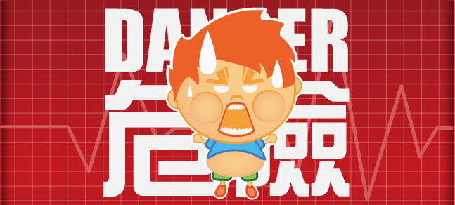

根據國民健康局高血糖、高血脂、高血壓盛行率研究調查發現，代謝症候群的民眾未來罹患糖尿病、高血壓、高血脂症、心臟病及腦中風的機率，分別為一般民眾的6、4、3、2倍。
代謝症候群衍生疾病更佔十大死因五項之多，而根據行政院衛生署96年所做統計，70歲以下人口因為這些疾病而導致平均壽命少活了12.7年！現在就讓我們來檢測一下您的代謝症候群風險為何？
開始檢查


我覺得我壓力好大
我自己或是直系血親
有血壓高的情形
有血壓高的情形
收縮壓 ≧ 130mmH
舒張壓 ≦ 85mmH
我自己或是直系血親
有血糖高的情形
有血糖高的情形
（飯前血糖 ≧ 100）
我自己或是直系血親
有血脂高的情形
有血脂高的情形
三酸甘油酯 ≧ 150 或
高密度膽固醇 男 < 40 女 < 50
我有腹部肥胖的情形
男性腰圍 ≧ 90 公分
女性腰圍 ≧ 80 公分
我有每周運動3次
30分鐘的運動
30分鐘的運動
我使用電腦及
看電視時間長
看電視時間長
我有每天進食三蔬二
果並少吃大魚大肉
果並少吃大魚大肉
我作息正常
你是代謝症候群患者
代謝症候群是糖尿病、高血壓、心臟病及腦中風等疾病的「病前症狀」，
為了您的健康人生，建議您最優先要做的事是減小腰圍！若有也有高血壓、血糖、血脂的問題，也請諮詢醫師意見。並採取減輕體重+健康飲食+每日30分鐘的中度運動，
希望您能早日達到「腰瘦了健康人生就長了」的目標!!
你是代謝症候群候選人
你已經有代謝症候群的危險因子囉！建議您除了改變生活型態來改善，若有血壓、血糖、血脂的問題，也請諮詢醫生意見。
好好控制以遠離代謝症候群的威脅喔！
你是健康好寶寶
請繼續勤勞控制腰圍、血糖、血壓與血脂。選擇正常的飲食並且維持動態的生活與健康的習慣。希望你能夠健康久久。